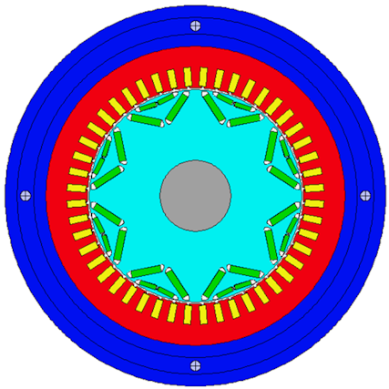
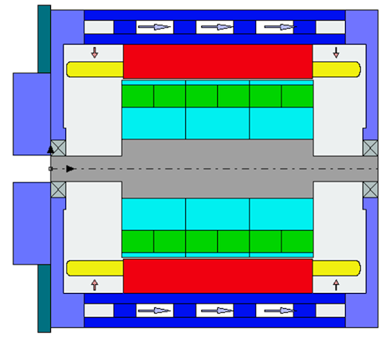
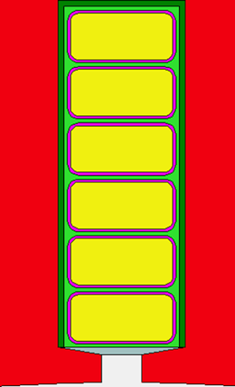
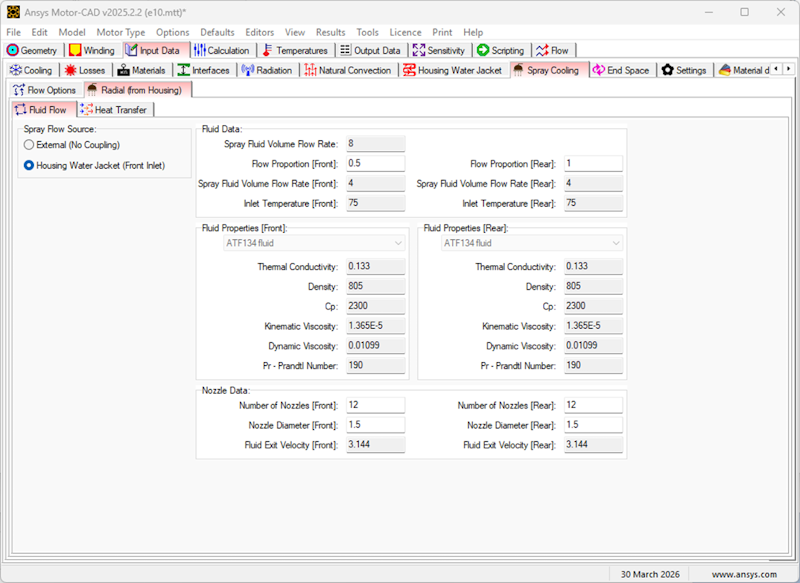
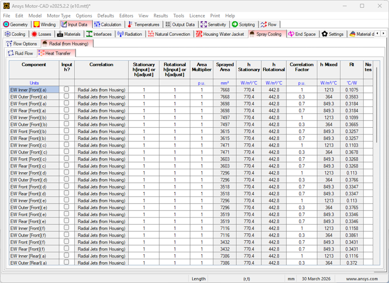
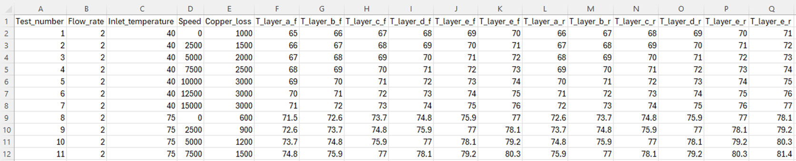
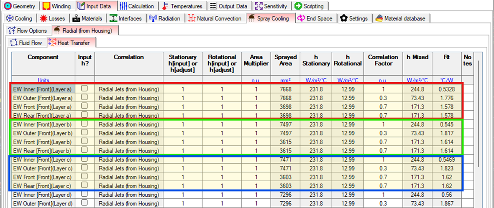
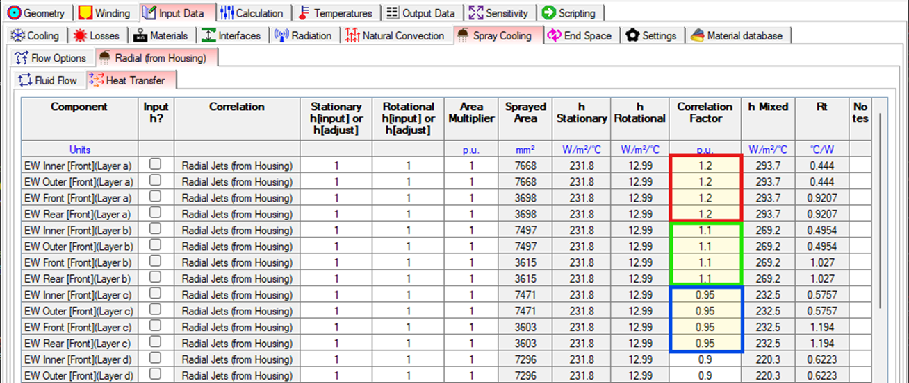

Note
Go to the end to download the full example code.
Motor-CAD oil cooling calibration example script#
This example shows a calibration workflow for oil spray cooling in Motor-CAD using temperature data from experimental testing.
Background#
The Motor-CAD e10 template is the starting point of this example. This is a 48 slot 8 pole IPM traction motor that has a 6 layer hairpin winding and is cooled by both a Housing Water Jacket and Spray Cooling Radial (from Housing).



Our motor, both in the Motor-CAD model and on our (fictitious) test bench, has ATF134 fluid being ejected onto the front and rear end windings in equal proportions. There are 12 nozzles at the front and another 12 nozzles at the rear, with each nozzle being 1.5 mm in diameter. In our initial Motor-CAD model, a Housing Water Jacket is also present, though this is not used in the experimental testing.

The Motor-CAD Spray Cooling Radial (from Housing) cooling system makes use of heat transfer correlations to determine the heat transfer coefficient (HTC) of the oil cooling. The correlations take into account the fluid properties, the nozzle configurations, the oil flow rate as well as the rotational speed. As can be seen in the Heat Transfer tab of the cooling system, the calculated HTC consists of a combination of a stationary component and a rotational component, which is applied to each surface to which the oil spray is in contact. This includes the four surfaces of each end winding hairpin, as well as the rotor and magnet end surfaces, housings, endcaps, bearings, and shaft surfaces. The HTCs determine the amount of heat being transferred from the motor surfaces to the oil, with higher HTCs resulting in greater heat transfer or equivalently, better cooling. This ultimately affects the machine temperatures.

Because spray cooling is a complex phenomenon, Motor-CAD provides controls to further adjust the cooling system. As the above image shows, separate multipliers for the stationary and rotational components of the HTC are available, alongside an overall Correlation Factor multiplier. In addition, both the stationary and rotational HTC values can be set directly.
In this example, we would like to further increase the accuracy of the Motor-CAD spray cooling model to match the exact spray cooling geometry and configuration of our real-life machine. We will do this by performing experimental testing that would allow us to calibrate these spray cooling parameters. The goal is to have a fully calibrated Motor-CAD model that responds to changes in the flow rates and inlet temperatures in the same way as the real-life motor does. By the end of the calibration process, our Motor-CAD temperatures should match closely the temperatures of the machine on the test rig.
Experimental setup and test plan#
It is important to have a comprehensive test plan to ensure all machine phenomenon that could impact the temperatures can be characterised. Only then will we have confidence that the effects measured during the testing are due to the cooling system only, allowing us to then calibrate the cooling system in the Motor-CAD model. This is especially important for oil spray cooling, where the oil can have effects beyond just the cooling of the end windings (for example causing heating due to frictional effects in the airgap). As a result, the test plan included:
Tests to characterise passive cooling (i.e. without any liquid cooling)
Tests to characterise the mechanical losses (airgap windage losses and bearing losses), both with and without oil spray cooling
Tests to characterise the spray cooling, at various flow rates, oil inlet temperatures, and rotational speeds
For the experimental testing, the housing water jacket cooling system was removed with no fluid flowing in the Housing Water Jacket.
The winding connections were modified so that all hairpins were connected in series. This allowed a simple DC source to be used to energise the windings, which ensured that no AC losses were present. If AC losses were present, this would increase the uncertainty in the loss distribution within the copper windings. Using DC losses allows us to set up the Motor-CAD model with DC losses only, with confidence of an even loss distribution within the windings. In addition, for each test, the input electrical power to the windings was measured.
Non-magnetic dummy magnets were used in the rotor to prevent eddy currents and rotor iron losses. As a result, only mechanical losses (bearing losses and airgap windage losses) and DC copper losses were present in the machine.
The hairpin end windings were instrumented with thermocouples, allowing their temperatures to be measured. This was performed for each of the six hairpin end windings at multiple circumferential positions, for both the front and rear end windings.
The testing was performed in a temperature-controlled chamber, in which the ambient temperature was maintained constant at 40°C.
All measurements were taken when the readings had stabilised (i.e. at steady state).
Tests to characterise passive cooling and mechanical losses#
Firstly, the geometry of the Motor-CAD model must be appropriately set up and calibrated, including end winding lengths, MLT, and surface areas. We will assume this has already been performed.
In addition, we will assume that the results of tests (a) and (b) have already been used to calibrate the machine passive cooling and mechanical losses (both with and without oil spray cooling) in the Motor-CAD model.
As a result, we can be confident that we can use the results of test (c) to directly calibrate the Spray Cooling system in the Motor-CAD model.
Tests to characterise spray cooling#
The test plan included all combinations of the following parameters:
Spray Cooling (Radial from Housing) flow rate (litres/min): 2, 4, 6
Spray Cooling (Radial from Housing) inlet temperature (°C): 40, 75
Shaft speed (rpm): 0, 2500, 5000, 7500, 10000, 12500, 15000
As a result, a total of 42 tests were conducted. In each test, erroneous temperature measurements were discarded and the average temperature of each hairpin end winding layer was calculated, giving a total of twelve temperature values (six for the front and six for the rear). The input electrical power was also measured.
The results of the tests were saved to a CSV file:

Each row represents the steady state results of a single test. The values stored in each column are:
Test_numbera number from 1 to 42Flow_ratethe flow rate of the oil spray cooling in litres/minInlet_temperaturethe inlet temperature of the oil spray cooling in °CSpeedthe rotational speed in rpmCopper_lossthe input electrical power which is converted into copper lossT_layer_x_ythe measured temperature of the hairpin end windings, wherexis the hairpin layer (a to f) andyis either f (for front) or r (for rear)
This data set will be used to calibrate the spray cooling system. There are a large number of tests performed, with a large number of parameters. Therefore, we will automate the calibration process using scripting.
Spray cooling calibration process#
To calibrate the spray cooling system, the following steps will be performed:
Setup directories for the calibration process
Load in the CSV file containing the experimental testing results
Create a MOT file for each test case setting the oil flow rate, oil inlet temperature, shaft speed and copper loss
For each test case, modify the Spray Cooling (Radial from Housing) parameters until the calculated end winding enamel temperatures match the test temperatures
Postprocess the results
For step d., the calibration step, several different methods exist to achieve the desired temperature match. The Spray Cooling -> Heat Transfer tab allows us to set separate multipliers for the stationary and rotational components of the HTC, set a Correlation Factor multiplier, or set the stationary and rotational HTC values directly.
For this experimental study, we will perform the calibration by adjusting the Correlation Factor column. This allows us to maintain the same balance between the stationary and rotational components of the HTC as in the original correlation, while adjusting the overall magnitude of the HTC to achieve a better temperature match.

As shown in the image above, these values can be independently set on each of the four surfaces of each hairpin end winding layer. However, our experimental setup provides only 1 temperature value per end winding hairpin layer, so it is not possible to separately quantify the temperatures of each of the four surfaces. Therefore, we cannot determine four Correlation Factors for each hairpin.
As a result, we will perform the calibration by using the same Correlation Factor for all four surfaces of a particular layer, and by comparing the average temperature of each of the four surfaces to the experimentally measured temperature. Therefore, for each test case, we expect the calibrated results to look something like the following:

This calibration process could be performed by manually adjusting the Correlation Factor, running the analysis, checking the temperatures, and then repeating until a good match is achieved. However, this would be very time-consuming, especially given the large number of test cases. Therefore, we will automate this process using scripting.
Automated spray cooling calibration via scripting#
Perform required imports#
Import repeat from itertools and Pool from multiprocessing to manage the multiple
parallel Motor-CAD processes.
Import os and shutil for saving and loading the files required by the example.
Import statistics for analysing the temperature data.
Import time for logging the time required for processes to complete.
Import numpy to define the bounds for correlation factors.
Import pandas to read data from CSV files.
Import Bounds and minimize from scipy.optimize to carry out the optimisation.
Import pymotorcad to access Motor-CAD.
from itertools import repeat
from multiprocessing import Pool
import os
import shutil
import statistics
import time
import numpy as np
import pandas as pd
from scipy.optimize import Bounds, minimize
import ansys.motorcad.core as pymotorcad
Define the main calibration procedure#
Here we define the main procedure that will perform the calibration process. This procedure calls the various functions that we will define in the following sections to perform each step of the calibration process. The following steps are performed:
Setup directories to store files
Load the experimental testcase data
Create a Motor-CAD model for each testcase
Obtain common Motor-CAD model data
Perform the calibration for each testcase
Collate the calibration results
def perform_calibration(parallel_workers):
# 1. Setup directories to store files
working_folder, inputs_folder, outputs_folder = setup_directories()
# 2. Load the experimental testcase data
testcase_data = load_testcase_data(inputs_folder)
# Open a Motor-CAD instance to be used during the initialisation stages of the calibration
# process, such as creating the base MOT file and the MOT files for each testcase. This
# instance will be closed before the optimisation begins, and separate instances will be opened
# for each parallel worker during the optimisation.
mcad = pymotorcad.MotorCAD()
mcad.set_variable("MessageDisplayState", 2)
# 3. Create a Motor-CAD model for each testcase
testcase_filepaths = get_testcase_motfiles(
mcad, working_folder, inputs_folder, outputs_folder, testcase_data
)
# 4. Obtain common Motor-CAD model data
num_hairpins, oil_node_f, oil_node_r, ewdg_nodes_f, ewdg_nodes_r = get_model_data(
mcad, testcase_filepaths
)
# Close the Motor-CAD instance used for setup, as this will not be used for the optimisation.
# Separate instances will be opened for each parallel worker during the optimisation, to allow
# for multiple testcases to be optimised at the same time.
mcad.quit()
# 5. Perform the calibration for each testcase
calibrate_testcases(
parallel_workers,
testcase_filepaths,
testcase_data,
num_hairpins,
ewdg_nodes_f,
ewdg_nodes_r,
oil_node_f,
oil_node_r,
)
# 6. Collate the calibration results
collate_results(
inputs_folder,
outputs_folder,
testcase_filepaths,
num_hairpins,
ewdg_nodes_f,
ewdg_nodes_r,
oil_node_f,
oil_node_r,
)
1. Setup directories to store files#
This creates a working folder with two subfolders: inputs and outputs. The inputs
folder is where the initial MOT files for each testcase should be
stored (if they already exist) alongside the CSV file with the test data. The outputs folder
is where the MOT files that are used for the calibration will be stored. If a MOT file for a
testcase already exists in the inputs folder, it will be copied to the outputs folder and
used for the calibration. If not, a new MOT file will be created based on the base model and
saved to the outputs folder to be used for the calibration.
def setup_directories():
working_folder = os.path.join(os.getcwd(), "oil_cooling_calibration")
inputs_folder = os.path.join(working_folder, "inputs")
outputs_folder = os.path.join(working_folder, "outputs")
os.makedirs(working_folder, exist_ok=True)
os.makedirs(inputs_folder, exist_ok=True)
# delete the outputs_folder, then create it again
shutil.rmtree(outputs_folder, ignore_errors=True)
os.makedirs(outputs_folder, exist_ok=True)
return working_folder, inputs_folder, outputs_folder
2. Load the experimental testcase data#
This function reads the test data from a CSV file in the inputs folder and returns it as a pandas dataframe. Each row of the dataframe corresponds to a test case, and contains the parameters and measured temperatures for that test case.
Note
This example requires the use of a CSV test data file, with specific formatting and
column names. The CSV file should be saved to the inputs_folder directory. You can download
the test_data.csv example file from:
ansys/pymotorcad
def load_testcase_data(inputs_folder):
testcase_data = pd.read_csv(os.path.join(inputs_folder, "test_data.csv"), index_col="Test_case")
return testcase_data
3. Create a Motor-CAD model for each testcase#
For each of the test cases, a Motor-CAD model (MOT file) is required to perform the calibration. This Motor-CAD file must be setup with the same parameters as the test case.
We will first create a base MOT file with the common parameters for all test cases, and then use
this to create the individual MOT files for each test case by updating the parameters that vary
between test cases. The resulting MOT files will be saved to the outputs folder.
3.1 Create a common base MOT file#
In our case, this begins with the e10 template. We will assume this has already been calibrated for passive cooling and mechanical losses, and will now modify this to ensure it matches the common parts of all 42 spray cooling tests. The following changes are required:
Since the test setup excludes the Housing Water Jacket, we must turn off the Housing Water in the Motor-CAD file. Only Spray Cooling (Radial from Housing) is present.
Set up the Spray Cooling system to use:
50:50 flow split between the front and rear.
ATF134 fluid for both the front and rear.
12 nozzles of 1.5 mm diameter at the front and 12 nozzles of 1.5 mm diameter at the rear.
Set the ambient temperature, which was measured to be 40 °C throughout all tests.
Set all non-mechanical losses to zero. The mechanical losses have already been calibrated, and the copper loss, which varies throughout each test, will be set later.
Disable temperature scaling of the copper loss. The input electrical power has been measured at steady state (it is effectively already scaled), so these are the absolute values.
def create_base_motfile(mcad, working_folder):
mcad.set_variable("MessageDisplayState", 2)
mcad.load_template("e10")
mcad.show_thermal_context()
mcad.set_variable("Housing_Water_Jacket", False)
mcad.set_variable("Spray_RadialHousing_FlowProportion_F", 0.5)
mcad.set_fluid("Spray_RadialHousing_Fluid_F", "ATF134 fluid")
mcad.set_fluid("Spray_RadialHousing_Fluid_R", "ATF134 fluid")
mcad.set_variable("Spray_RadialHousing_NozzleNumber_F", 12)
mcad.set_variable("Spray_RadialHousing_NozzleNumber_R", 12)
mcad.set_variable("Spray_RadialHousing_NozzleDiameter_F", 1.5)
mcad.set_variable("Spray_RadialHousing_NozzleDiameter_R", 1.5)
mcad.set_variable("T_Ambient", 40)
mcad.set_variable("Armature_Copper_Loss_@Ref_Speed", 0)
mcad.set_variable("Armature_Copper_Freq_Component_Loss_@Ref_Speed", 0)
mcad.set_variable("Stator_Iron_Loss_@Ref_Speed_[Back_Iron]", 0)
mcad.set_variable("Stator_Iron_Loss_@Ref_Speed_[Tooth]", 0)
mcad.set_variable("Magnet_Iron_Loss_@Ref_Speed", 0)
mcad.set_variable("Rotor_Iron_Loss_@Ref_Speed_[Embedded_Magnet_Pole]", 0)
mcad.set_variable("Rotor_Iron_Loss_@Ref_Speed_[Back_Iron]", 0)
mcad.set_variable("Windage_Loss_(Ext_Fan)@Ref_Speed", 0)
mcad.set_variable("Copper_Losses_Vary_With_Temperature", False)
# Save the resulting file to the ``working_folder`` as ``e10_calibration_base.mot``. This will
# be used as the start point to create the individual test case files.
base_motfile = os.path.join(working_folder, "e10_calibration_base.mot")
mcad.save_to_file(base_motfile)
return base_motfile
3.2 Create individual MOT files for each test case#
This function uses the base MOT file to create the individual MOT files for each test case. It
iterates through the input test case data, and sets the flow rate, inlet temperature, speed, and
copper loss and saves the resulting MOT file to the outputs folder. This will then be used
during the calibration process.
If a MOT file for a test case already exists in the inputs folder, it is assumed that this
file has already been set up with the correct parameters for that test case, and the file is
copied to the outputs folder to be used for the calibration. This functionality has been added
to save time by not having to create the file from scratch for each test case if it has already
been created in a previous run.
def get_testcase_motfiles(mcad, working_folder, inputs_folder, outputs_folder, testcase_data):
testcase_filepaths = []
base_motfile = None
for i_test_case, row in testcase_data.iterrows():
testcase_mofile_name = "test_case_" + str(i_test_case) + ".mot"
testcase_input_filepath = os.path.join(inputs_folder, testcase_mofile_name)
testcase_output_filepath = os.path.join(outputs_folder, testcase_mofile_name)
if os.path.isfile(testcase_input_filepath):
# If the file exists, copy it to the outputs folder
shutil.copy(testcase_input_filepath, testcase_output_filepath)
else:
# If the file does not exist, create it by loading the base model and updating the
# relevant parameters
if base_motfile is None:
base_motfile = create_base_motfile(mcad, working_folder)
mcad.load_from_file(base_motfile)
i_flow_rate = row["Flow_rate"]
i_inlet_temp = row["Inlet_temperature"]
i_speed = row["Speed"]
i_copper_loss = row["Copper_loss"]
mcad.set_variable("Spray_RadialHousing_VolumeFlowRate", i_flow_rate / 60000)
mcad.set_variable("Spray_RadialHousing_InletTemperature_F", i_inlet_temp)
mcad.set_variable("Spray_RadialHousing_InletTemperature_R", i_inlet_temp)
mcad.set_variable("ShaftSpeed", i_speed)
mcad.set_variable("Armature_Copper_Loss_@Ref_Speed", i_copper_loss)
mcad.save_to_file(testcase_output_filepath)
testcase_filepaths.append(testcase_output_filepath)
return testcase_filepaths
4. Obtain common Motor-CAD model data#
Obtain model data that is common between test cases. This includes the number of hairpin layers and the node numbers of the oil nodes and end winding nodes. This data is required to calculate the enamel temperatures and the temperature error during the calibration process.
By obtaining this data before the optimisation process begins, we can save time by not having to obtain it during each iteration of the optimisation, where it would significantly increase the time taken due to the large number of iterations and test cases.
We need to know the number of hairpin layers. Each layer is modelled separately in the Motor-CAD thermal model, with separate nodes that are cooled by the oil spray.
def hairpin_number(mcad):
num_hairpins = mcad.get_variable("WindingLayers")
return num_hairpins
The oil node numbers are required to calculate the enamel temperatures and the temperature error during the calibration process. The node numbers are displayed in the Temperatures -> Schematic -> Detail tab in Motor-CAD. The node numbers used for the Spray Cooling Radial (from Housing) cooling system are 192 and 193. If a different spray cooling system is used, modify this function accordingly with the appropriate oil node numbers for the front and rear of the machine.
def oil_node_numbers():
front_node = 192
rear_node = 193
return front_node, rear_node
Next, the node numbers of the end winding surfaces must be identified. The node numbers of the first end winding layer are always the same. The node numbers of following layers utilise the same offset. Hence, the node numbers of each layer can be identified in an automated way. If necessary, verify the node numbers by comparing with the Motor-CAD detailed schematic.
def end_winding_node_numbers(mcad, num_hairpins):
# These node numbers represent the surfaces of the copper of the first end winding hairpin layer
# (Layer A). These node numbers are fixed and unchanged between models
layer_a_f_nodes = [330, 331, 333, 334]
layer_a_r_nodes = [336, 337, 339, 340]
# Determine the node numbers for each of the end winding layers in an automated way, based on
# the Layer A node numbers and the cuboidal offset. This allows for the code to be easily
# adaptable to different models with different numbers of layers.
cuboidal_offset = mcad.get_offset_node_number(350, 1, 2) - mcad.get_offset_node_number(
350, 1, 1
)
# The node number offset between each layer of the end winding, which is consistent between
# layers due to the cuboidal mesh. This is calculated based on the node numbers of the first
# layer of the end winding.
front_nodes = [
[node_number + cuboidal_offset * hairpin for node_number in layer_a_f_nodes]
for hairpin in range(num_hairpins)
]
rear_nodes = [
[node_number + cuboidal_offset * hairpin for node_number in layer_a_r_nodes]
for hairpin in range(num_hairpins)
]
return front_nodes, rear_nodes
Using the previously defined functions, this procedure loads the Motor-CAD model and obtains the model data required for the calibration process, including the number of hairpin layers and the node numbers of the oil nodes and end winding nodes. Only the first test case MOT file is loaded to obtain the model data as this data is common between test cases.
def get_model_data(mcad, testcase_filepaths):
# Load the first test case file from which the model data will be obtained
mcad.load_from_file(testcase_filepaths[0])
num_hairpins = hairpin_number(mcad)
# A steady state calculation must first be performed so that the thermal network has the correct
# node numbers
mcad.do_steady_state_analysis()
oil_node_f, oil_node_r = oil_node_numbers()
ewdg_nodes_f, ewdg_nodes_r = end_winding_node_numbers(mcad, num_hairpins)
return num_hairpins, oil_node_f, oil_node_r, ewdg_nodes_f, ewdg_nodes_r
5. Perform the calibration for each testcase#
Now that we have the test data, Motor-CAD models, and common model data, we can work on the actual calibration process for each test case. We must first define some functions to be used during this process
5.1 Define function to calculate temperature error#
We need a function that returns the temperature error between the measured test data and the results of the Motor-CAD model. This error is used as the objective function for the optimisation. The lower the error, the closer the calculated enamel temperatures are to the measured enamel temperatures.
Into this function, we will pass a list of the measured temperatures. Our motor has six hairpin layers, and we have measured the temperature of each of these, hence the list passed in will have twelve temperature values (six for front and six for rear). We will also pass in the node numbers we have previously calculated for the oil and end winding surfaces. The function will query Motor-CAD for the calculated temperature values, compare them to the measured values, and return the mean square error value.
def get_temperature_error(
mc, testcase_temperatures, ewdg_nodes_f, ewdg_nodes_r, oil_node_f, oil_node_r
):
# Calculate the enamel temperatures for each layer of the end winding, for both front and rear
enamel_temperatures_f, enamel_temperatures_r = calculate_enamel_temperatures(
mc, ewdg_nodes_f, ewdg_nodes_r, oil_node_f, oil_node_r
)
# Calculate the temperature error as the mean squared error between the calculated enamel
# temperatures and the test temperatures. The test temperatures is a list containing
# (2 * number of layers) elements, with the first half for the front and the second half for
# the rear
temperature_deltas = [
(enamel_temp - test_temp)
for enamel_temp, test_temp in zip(
enamel_temperatures_f + enamel_temperatures_r, testcase_temperatures
)
]
temperature_error = statistics.mean([delta**2 for delta in temperature_deltas])
return temperature_error
5.2 Define function to calculate enamel temperatures#
An important subtlety in the calibration is in the determination of the Motor-CAD temperatures. For hairpin winding, the Motor-CAD cuboid node temperatures represent the temperatures of the surfaces of the end winding copper. However, the experimental testing used thermocouples which were placed on the end winding enamel. The enamel temperature is different to the copper temperature due to the thermal resistance of the enamel. We have chosen to take this into account and the enamel temperature was determined via interpolation between the copper node temperature and the oil node temperature, based on the known enamel thermal resistance.
def calculate_enamel_temperatures(mc, ewdg_nodes_f, ewdg_nodes_r, oil_node_f, oil_node_r):
# The number of layers and surfaces is common between the front and rear, and so is calculated
# from only the front nodes for simplicity.
num_layers = len(ewdg_nodes_f)
num_surfaces = len(ewdg_nodes_f[0])
# Get the node temperatures. These are the temperatures of the surface of the copper and the oil
copper_temperatures_f = [
[mc.get_node_temperature(node) for node in layer_nodes] for layer_nodes in ewdg_nodes_f
]
copper_temperatures_r = [
[mc.get_node_temperature(node) for node in layer_nodes] for layer_nodes in ewdg_nodes_r
]
oil_temperatures_f = [[mc.get_node_temperature(oil_node_f)] * num_surfaces] * num_layers
oil_temperatures_r = [[mc.get_node_temperature(oil_node_r)] * num_surfaces] * num_layers
# Obtain winding enamel thermal resistances for each layer. These are the thermal resistances of
# the enamel layer on the surface of the copper.
enamel_rts_f = [
[
mc.get_array_variable("Rt_Ewdg_Enamel_RHSpray_Outer_F", index),
mc.get_array_variable("Rt_Ewdg_Enamel_RHSpray_Bore_F", index),
mc.get_array_variable("Rt_Ewdg_Enamel_RHSpray_End_F", index),
mc.get_array_variable("Rt_Ewdg_Enamel_RHSpray_End_F", index),
]
for index in range(num_layers)
]
enamel_rts_r = [
[
mc.get_array_variable("Rt_Ewdg_Enamel_RHSpray_Outer_R", index),
mc.get_array_variable("Rt_Ewdg_Enamel_RHSpray_Bore_R", index),
mc.get_array_variable("Rt_Ewdg_Enamel_RHSpray_End_R", index),
mc.get_array_variable("Rt_Ewdg_Enamel_RHSpray_End_R", index),
]
for index in range(num_layers)
]
# Obtain overall thermal resistances between oil node and each copper node. This includes the
# enamel and the oil cooling thermal resistance.
total_rt_f = [
[mc.get_node_to_node_resistance(oil_node_f, node) for node in layer_nodes]
for layer_nodes in ewdg_nodes_f
]
total_rt_r = [
[mc.get_node_to_node_resistance(oil_node_r, node) for node in layer_nodes]
for layer_nodes in ewdg_nodes_r
]
# Calculate the enamel temperature for each layer, using the formula:
# T_enamel = T_copper - (T_copper - T_oil) * (Rt_enamel / Rt_total)
enamel_temperatures_f = [
[
copper_temperatures_f[layer_index][node_index]
- (
copper_temperatures_f[layer_index][node_index]
- oil_temperatures_f[layer_index][node_index]
)
* (enamel_rts_f[layer_index][node_index] / total_rt_f[layer_index][node_index])
for node_index in range(num_surfaces)
]
for layer_index in range(num_layers)
]
enamel_temperatures_r = [
[
copper_temperatures_r[layer_index][node_index]
- (
copper_temperatures_r[layer_index][node_index]
- oil_temperatures_r[layer_index][node_index]
)
* (enamel_rts_r[layer_index][node_index] / total_rt_r[layer_index][node_index])
for node_index in range(num_surfaces)
]
for layer_index in range(num_layers)
]
# Calculate the average enamel temperature for each layer, by averaging the enamel temperatures
# of the surfaces of that layer. This is done to compare with the measured test temperatures,
# which is just a single enamel temperature value for each hairpin end winding layer.
enamel_temperatures_f = [statistics.mean(layer_temps) for layer_temps in enamel_temperatures_f]
enamel_temperatures_r = [statistics.mean(layer_temps) for layer_temps in enamel_temperatures_r]
return enamel_temperatures_f, enamel_temperatures_r
5.3 Define objective function for optimisation#
Next we will define the objective function that is used by the optimiser. The optimiser will vary the correlation factors to find the values that minimise this error, i.e. the values that give the closest match between calculated and measured enamel temperatures. Hence, the arguments to this function are a list of correlation factors and measured temperatures, and the function will return an error value.
def objective(
correlation_factors,
mc,
testcase_temperatures,
ewdg_nodes_f,
ewdg_nodes_r,
oil_node_f,
oil_node_r,
):
# optimiser will optimise a single list of parameters. Hence, the first half of the correlation
# factors list is for the front endwinding, and the second half is for the rear
front_cfs = correlation_factors[: len(correlation_factors) // 2]
rear_cfs = correlation_factors[len(correlation_factors) // 2 :]
# apply the correlation factors to each surface of each layer in Motor-CAD. The same
# correlation factor is applied to all surfaces of a layer, but different correlation factors
# can be applied to different layers. The front and rear layers are varied separately, to
# allow for the possibility of different correlation factors on the front and rear.
for index, cf in enumerate(front_cfs):
mc.set_array_variable(
"Spray_RadialHousing_CorrelationFactor_Hairpin_EWdg_Inner_F", index, cf
)
mc.set_array_variable(
"Spray_RadialHousing_CorrelationFactor_Hairpin_EWdg_Outer_F", index, cf
)
mc.set_array_variable(
"Spray_RadialHousing_CorrelationFactor_Hairpin_EWdg_Front_F", index, cf
)
mc.set_array_variable(
"Spray_RadialHousing_CorrelationFactor_Hairpin_EWdg_Rear_F", index, cf
)
for index, cf in enumerate(rear_cfs):
mc.set_array_variable(
"Spray_RadialHousing_CorrelationFactor_Hairpin_EWdg_Inner_R", index, cf
)
mc.set_array_variable(
"Spray_RadialHousing_CorrelationFactor_Hairpin_EWdg_Outer_R", index, cf
)
mc.set_array_variable(
"Spray_RadialHousing_CorrelationFactor_Hairpin_EWdg_Front_R", index, cf
)
mc.set_array_variable(
"Spray_RadialHousing_CorrelationFactor_Hairpin_EWdg_Rear_R", index, cf
)
# Run a thermal steady state analysis to calculate the new machine temperatures
mc.do_steady_state_analysis()
# Obtain the new temperature error, based on the calculated and measured enamel temperatures
temperature_error = get_temperature_error(
mc, testcase_temperatures, ewdg_nodes_f, ewdg_nodes_r, oil_node_f, oil_node_r
)
return temperature_error
5.4 Define function to perform the calibration for a single test case#
Now we can make use of the previously defined functions to perform the
calibration for a single test case. This procedure makes use of scipy.minimize to perform the
optimisation.
The Motor-CAD model corresponding to this test case must be supplied, along with the test data temperatures. The Motor-CAD model will be updated iteratively by the optimiser with different correlation factors to determine the correlation factors that result in the best match between the Motor-CAD model and experimental results. The calibrated MOT file will then be saved.
def calibrate_model(
testcase_filepath,
testcase_temperatures,
num_hairpins,
ewdg_nodes_f,
ewdg_nodes_r,
oil_node_f,
oil_node_r,
):
# Load in the initial Motor-CAD model for the testcase. This will be updated iteratively by
# the optimiser with different correlation factors.
mc.load_from_file(testcase_filepath)
# The number of variables to be optimised is equal to the number of layers multiplied by 2
# (for front and rear). Each variable represents the correlation factor for a layer, which is
# applied to all surfaces of that layer.
num_variables = num_hairpins * 2
# Minimum correlation factor value is 0, and maximum is unbounded. The bounds are kept feasible
# throughout iterations
bounds = Bounds(
lb=[0.0] * num_variables, ub=[np.inf] * num_variables, keep_feasible=[True] * num_variables
)
# Specify the tolerance for convergence. This is not the exact difference in temperature that
# decides the optimisation is complete, rather it sets a relevant solve-specific tolerance.
# This can be adjusted to balance the optimisation runtime and the accuracy of the results.
# A lower tolerance will lead to a more accurate result, but will take longer to run.
tolerance = 1.0
# Use an initial guess of 1 for the correlation factor of all surfaces of each layer.
initial_guess = [1.0] * num_variables
# Perform the optimisation. The correlation factors are varied to minimise the
# error calculated by the objective function. Initial estimates and bounds are supplied.
result = minimize(
objective,
initial_guess,
method="L-BFGS-B",
tol=tolerance,
bounds=bounds,
args=(mc, testcase_temperatures, ewdg_nodes_f, ewdg_nodes_r, oil_node_f, oil_node_r),
)
# Save the testcase file with the optimised correlation factors
mc.save_to_file(testcase_filepath)
# Summarise the optimisation results
print("Status : %s" % result["message"])
print("Total Evaluations: %d" % result["nfev"])
print(result.x[0])
5.5 Collate all test case temperatures into a list#
We will be performing the calibration for multiple test cases, and each test case has twelve temperature values (six for front and six for rear). Here we will define a function that extracts the temperature values for each test case from the test data dataframe and returns them in a list. Each element of the list corresponds to a test case and contains the twelve temperature values for that test case.
def all_testcase_temperatures(testcase_data):
all_testcase_temperatures = []
for _, row in testcase_data.iterrows():
all_testcase_temperatures.append(
[
row["T_layer_a_f"],
row["T_layer_b_f"],
row["T_layer_c_f"],
row["T_layer_d_f"],
row["T_layer_e_f"],
row["T_layer_f_f"],
row["T_layer_a_r"],
row["T_layer_b_r"],
row["T_layer_c_r"],
row["T_layer_d_r"],
row["T_layer_e_r"],
row["T_layer_f_r"],
]
)
return all_testcase_temperatures
5.6 Helper functions for Motor-CAD parallelisation#
These helper functions are required to utilise multiprocessing with Motor-CAD
# This function is used to open an instance of Motor-CAD for each parallel worker.
def open_motorcad_instances():
# global mc exists as a separate global variable in each parallel worker / process
global mc
mc = pymotorcad.MotorCAD()
mc.set_variable("MessageDisplayState", 2)
# This function closes the Motor-CAD instances. It requires a dummy argument due to it being called
# using the map function.
def close_motorcad_instances(_):
# quits each instance of Motor-CAD
mc.quit()
5.7 Define function to perform the calibration for all test cases, with parallelisation#
We now have a function to calibrate a single test case along side the necessary helper functions. We will now define the function that performs the calibration for all test cases.
The calibration is done using an optimiser, that adjusts the correlation factors until the
results match the test data. This is then repeated for each file. Given that this iterative
optimisation can take some time, along with the fact that each test case is independent, we can
speed up this process using parallelisation. The calibration function takes in the number of
parallel workers to use as an argument, and will use the python multiprocessing library to
open that number of parallel instances of Motor-CAD and perform the calibration for multiple test
cases at the same time. Ensure that your machine has enough resources and Motor-CAD licences for
the number of parallel workers you intend to use.
The parallelisation can be disabled by setting the number of workers to 1.
def calibrate_testcases(
parallel_workers,
testcase_filepaths,
testcase_data,
num_hairpins,
ewdg_nodes_f,
ewdg_nodes_r,
oil_node_f,
oil_node_r,
):
t0 = time.time()
# Use user chosen number of workers (or fewer, if there are fewer testcases)
parallel_workers = min(parallel_workers, len(testcase_filepaths))
if parallel_workers > 1:
print(f"Using {parallel_workers} parallel workers for calibration.")
# Create a pool of parallel workers, and open an instance of Motor-CAD for each worker.
p = Pool(processes=parallel_workers, initializer=open_motorcad_instances)
# Perform the calibration for each testcase in parallel. The starmap function handles the
# distribution of the different testcases to each worker. The arguments for each testcase
# are passed in as a list of tuples, where each tuple contains the arguments for a single
# testcase.
p.starmap(
calibrate_model,
zip(
testcase_filepaths,
all_testcase_temperatures(testcase_data),
repeat(num_hairpins),
repeat(ewdg_nodes_f),
repeat(ewdg_nodes_r),
repeat(oil_node_f),
repeat(oil_node_r),
),
)
# Close the Motor-CAD instances once the calibration is completed
p.map(close_motorcad_instances, range(parallel_workers))
else:
print("Using a single worker for calibration.")
# Open a single instance of Motor-CAD.
open_motorcad_instances()
# Perform the calibration for each testcase sequentially. This is significantly slower than
# the parallelised version, but is provided for compatibility with the pyMotorCAD
# documentation and for users who do not have the resources or licences to run multiple
# parallel instances of Motor-CAD.
for testcase_filepath, testcase_temperatures in zip(
testcase_filepaths, all_testcase_temperatures(testcase_data)
):
calibrate_model(
testcase_filepath,
testcase_temperatures,
num_hairpins,
ewdg_nodes_f,
ewdg_nodes_r,
oil_node_f,
oil_node_r,
)
# Close the Motor-CAD instance once the calibration is completed
close_motorcad_instances(None)
# Report the time taken to perform the calibration of all models
t1 = time.time()
print(f"Calibration completed in {t1-t0:.2f} seconds.")
6. Collate the calibration results#
Once the calibration is complete, the updated MOT files will be saved in the Outputs folder.
For ease of use, we will collate the results in a CSV file. This will be based on the input CSV
file, and will include the calibrated correlation factors along with the calculated enamel
temperatures.
def collate_results(
inputs_folder,
outputs_folder,
testcase_filepaths,
num_hairpins,
ewdg_nodes_f,
ewdg_nodes_r,
oil_node_f,
oil_node_r,
):
# Append three Motor-CAD columns to each existing row so later steps can populate them.
results_filepath = pd.read_csv(
os.path.join(inputs_folder, "test_data.csv"), index_col="Test_case"
)
temp_f_mcad = [
"T_layer_a_f_motorcad",
"T_layer_b_f_motorcad",
"T_layer_c_f_motorcad",
"T_layer_d_f_motorcad",
"T_layer_e_f_motorcad",
"T_layer_f_f_motorcad",
]
temp_r_mcad = [
"T_layer_a_r_motorcad",
"T_layer_b_r_motorcad",
"T_layer_c_r_motorcad",
"T_layer_d_r_motorcad",
"T_layer_e_r_motorcad",
"T_layer_f_r_motorcad",
]
cf_f_mcad = [
"Correlation_Factor_layer_a_f_motorcad",
"Correlation_Factor_layer_b_f_motorcad",
"Correlation_Factor_layer_c_f_motorcad",
"Correlation_Factor_layer_d_f_motorcad",
"Correlation_Factor_layer_e_f_motorcad",
"Correlation_Factor_layer_f_f_motorcad",
]
cf_r_mcad = [
"Correlation_Factor_layer_a_r_motorcad",
"Correlation_Factor_layer_b_r_motorcad",
"Correlation_Factor_layer_c_r_motorcad",
"Correlation_Factor_layer_d_r_motorcad",
"Correlation_Factor_layer_e_r_motorcad",
"Correlation_Factor_layer_f_r_motorcad",
]
new_columns = temp_f_mcad + temp_r_mcad + cf_f_mcad + cf_r_mcad
mcad = pymotorcad.MotorCAD()
mcad.set_variable("MessageDisplayState", 2)
# For each testcase, load in the optimised MOT file and extract the calculated enamel
# temperatures and correlation factors, and save these to the results dataframe. The results
# dataframe is then saved to a CSV file.
for index, model in enumerate(testcase_filepaths):
mcad.load_from_file(model)
mcad.do_steady_state_analysis()
enamel_temperatures_f, enamel_temperatures_r = calculate_enamel_temperatures(
mcad, ewdg_nodes_f, ewdg_nodes_r, oil_node_f, oil_node_r
)
# Extract the correlation factors for each layer. These will be the same for all surfaces
# of a layer, so only one surface per layer is extracted.
correlation_factors_f = [
mcad.get_array_variable(
"Spray_RadialHousing_CorrelationFactor_Hairpin_EWdg_Inner_F", index
)
for index in range(num_hairpins)
]
correlation_factors_r = [
mcad.get_array_variable(
"Spray_RadialHousing_CorrelationFactor_Hairpin_EWdg_Inner_R", index
)
for index in range(num_hairpins)
]
new_values = (
enamel_temperatures_f
+ enamel_temperatures_r
+ correlation_factors_f
+ correlation_factors_r
)
for column, value in zip(new_columns, new_values):
# Test case index in the CSV file starts from 1, whereas the enumerate index starts
# from 0, so use index+1
results_filepath.at[index + 1, column] = value
results_filepath.to_csv(os.path.join(outputs_folder, "results_data.csv"), index=True)
mcad.quit()
Run the main calibration procedure#
Finally, we can run the main calibration procedure. This will perform the calibration for all test cases.
The calibration makes use of parallel workers. Each worker opens an instance of Motor-CAD and performs the calibration for a single testcase. This significantly speeds up the calibration process when there are multiple test cases. Ensure that your machine has enough resources and Motor-CAD licences for the number of parallel workers you choose to use.
The parallelisation can be disabled by setting the number of workers to 1. This would result in a single instance of Motor-CAD being used to perform the calibration for all test cases sequentially.
parallel_workers = 4
Note
The if not "PYMOTORCAD_DOCS_BUILD" in os.environ: statement below prevents the
perform_calibration() function from being run during the pyMotorCAD documentation
build. This is done to speed up the documentation build. It should not impact users
running this code locally, however, you can remove it if you wish.
if not "PYMOTORCAD_DOCS_BUILD" in os.environ:
# As we are using the multiprocessing module, it is necessary to wrap the perform_calibration()
# function call in a ``if __name__ == "__main__":`` block to avoid issues with multiprocessing.
if __name__ == "__main__":
perform_calibration(parallel_workers)
Total running time of the script: (0 minutes 6.704 seconds)